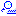

From the menu View → Position You can also open this window by clicking on  icon in the main tool bar.
This provides a quick and easy way to read or set the coordinates of the center of the chart. Coordinates can be equatorial or azimuthal. The conversion is done automatically.
You also can read the equinox setting of the equatorial coordinate system that your chart uses. If you want to change this, you can specify the equinox (and epoch) for your chart by the tab Chart, Coordinates from the menu by setup → Chart, Coordinates, in the type of coordinates part.
You can also change the position in a less controlled way, see for that the directions and displacements shortcuts.
In the lower part of the position dialog box you can set a very precise FOV (precision: second) and a rotation (precision: degree) for the chart. Simply fill the size of your FOV or the rotation in.
Other ways to change the field of vision:
You can change the FOV in an easier -but less precise- way by the zoom group buttons from the main bar. Or by the buttons from the The Field of Vision group. Or with the shortcuts.
{kind=link}
{kind=link}